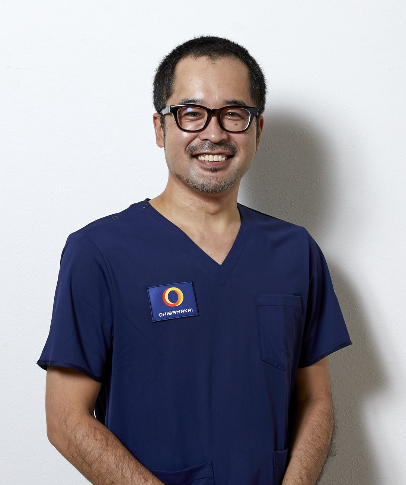
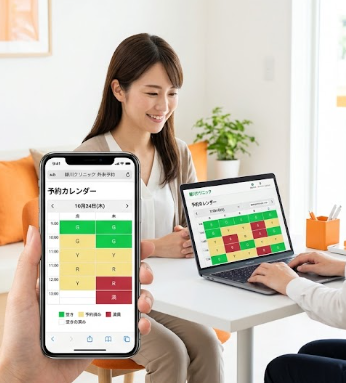
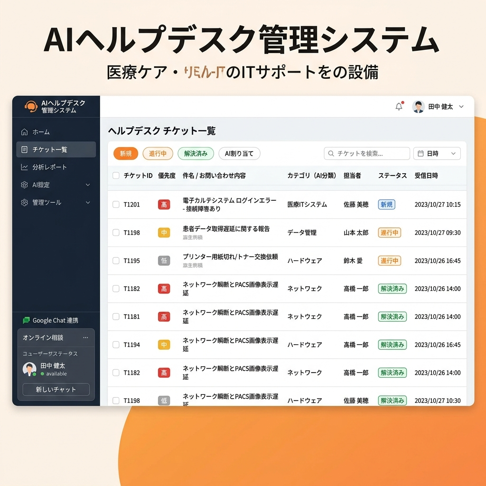
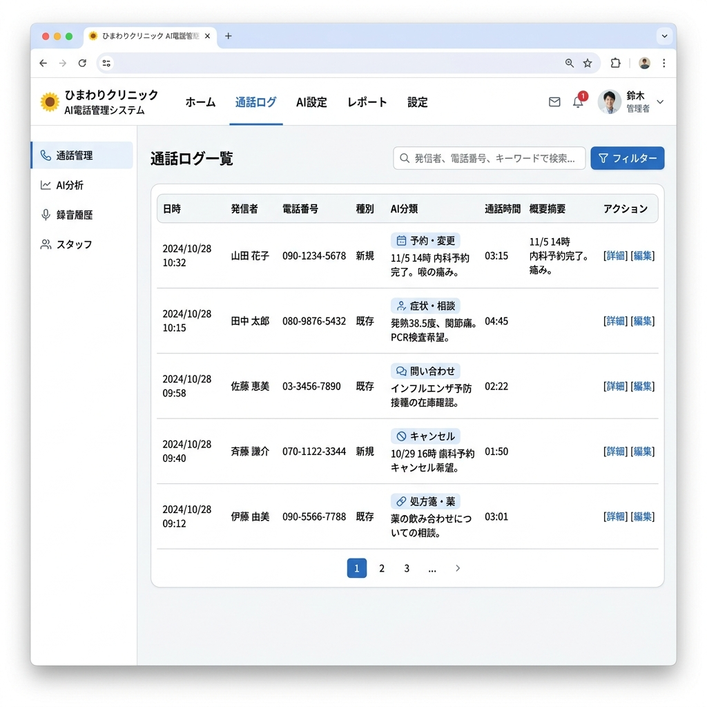
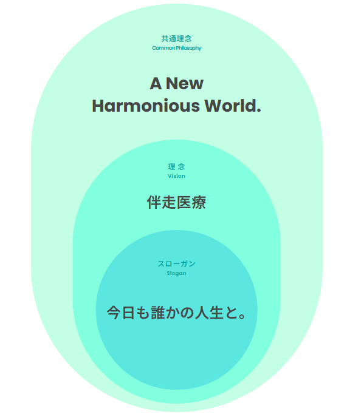

DXは業務効率化のためではない。
患者さんに伴走する時間を増やすためのもの。

1日8時間のうち2時間しか患者さんと向き合えていないなら、事務作業を減らすだけで、対面時間は2倍になる。
DXは患者さんに伴走する時間を増やすためのもの。— 山口 高秀（理事長）


おひさま会の在宅医療DXは「対人業務にAIを割り込ませない」という方針で進めています。
AIや自動化が担うのは、あくまで事務作業・定型作業だけ。
現場のスタッフが患者さんと過ごす時間を最大化すること。それがすべての原点です。
ツール名ではなく、現場の困りごとから選べます。
自院の話に近いカードを開いてください。
在宅医療DXをクリニックで進めるとき、加算の点数は国の資料へ。あと残る仕分けと下ごしらえを、内製で仕組みにしています。
区別を読む →届いたFAXの宛名・書類種別を人が調べ、カルテへ貼る作業が続く。1枚に数分かかると、月の時間が大きく削られます。
詳しく見る →内容の仕分けと一次整理を仕組みに任せ、人が判断・返信する。電話応対そのものをボットに置き換える話ではありません。
詳しく見る →電子カルテ上の情報を引用して下ごしらえし、完成は人が確認します。有料の自動化ツールを自前の流れに置き換えた実践です。
詳しく見る →既存の電子カルテやレセコンを捨てず、裏側でIDを突き合わせる考え方です。まずは構想の共有です。
考え方を読む →バーコードで入庫・出庫を記録。残量が減ったら医薬品発注の知らせが届きます。初めての薬は大きなマスタから名前を引きます。
詳しく見る →怖いのは「AIが間違えること」そのものではありません。
間違えたとき、誰が止められるかが設計されているかどうかです。
宛名の識別や書類の分類など、非臨床の作業だけをAIに任せます。診断や処方の判断には使いません。
AIの結果をそのまま確定しません。スタッフが見てから電子カルテへ反映します。勝手に「完成」させません。
確信度が低いデータは「要確認」へ回します。進めないことを、安全の側に倒す設計です。
構想ではなく、5つのクリニックでいま動いている数字です。
課題カードの先にある、個別の実践です

FAX受信PDFをAIが即座に解析。患者特定・書類分類・PDF分割を自動処理し、電子カルテへ自動ファイリング。
詳細を見る →
患者・施設からの問い合わせを3軸トリアージで自動分類。Google Chatに即時通知し、チャット上でステータス管理が完結。
詳細を見る →
スマホで保険証を撮影するだけでAIが自動判別。PDF変換・月別フォルダ自動保存。マイナンバーカード誤撮影も防止。
詳細を見る →
バーコードで納品・払出。期限と払出先を記録し、在庫一覧とログで確認。残量が減ったら発注の知らせが届きます。
詳細を見る →
訪問診療管理システムから往診予定を取得し、電子カルテへ白紙・引用カルテを自動作成。処方日数の自動計算にも対応。
詳細を見る →
訪問看護指示書・診療情報提供書などの定期書類を電子カルテ上で全自動作成。有料RPAツールを内製で置き換え。
詳細を見る →
訪問診療のレントゲン依頼から撮影完了フロー・月次集計まで一元管理。健康診断の集団検診機能も搭載。
詳細を見る →
訪問診療管理システムのAPIから予約データを取得し、カレンダー形式でリアルタイム表示。スマホ・PCどちらからでも空き状況を即確認でき、電話での予約調整が不要に。

法人内ヘルプデスクへの問い合わせをAIが自動分類し、担当者へ即時振り分け。1次回答案の生成から週次・月次レポートの自動作成・投稿まで一気通貫で対応。

クリニックへの電話着信データをAIがリアルタイムで記録・分類。患者名の自動特定から用件の振り分けまで処理し、対応漏れゼロを実現。

在庫チェック・発注依頼・チャット通知をワンストップで管理。「月3週の火曜日」など複雑な周期発注にも対応。
詳細を見る →他にも 往診予定チェッカー・食支援システム・MeetRecorder など多数を運用中
現場の実体験から学んだDXの知見
About
我々おひさま会は、医療法人としてのスローガン・理念の他にも、
グループ全体で目指す「共通理念」を掲げています。

この理念を支えるために、DX推進部はテクノロジーの力で
スタッフが「人と向き合う時間」を最大化する基盤を構築しています。